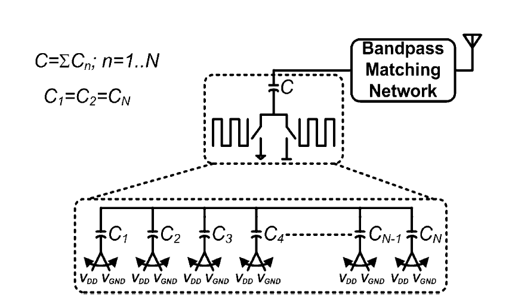
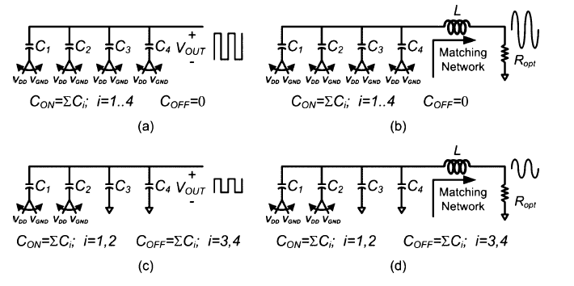
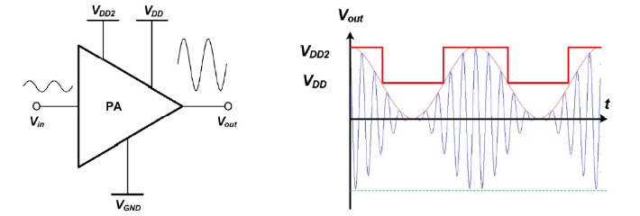
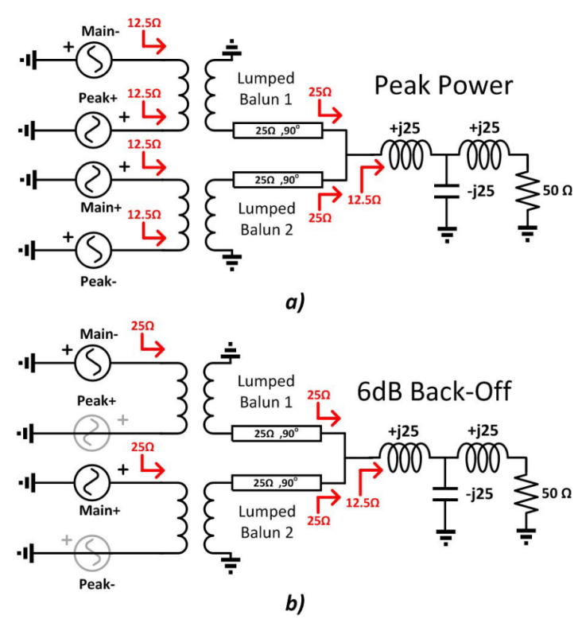

集创赛记录（2）：赛题题目
1. 赛题题目
一、杯赛题目：2.4GHz高效率SCPA设计
二、参赛组别：A组、B组
三、设计指标
- 工作频率2.4GHz
- 采用架构为开关电容功率放大器(Switched-Capacitor Power Amplifier, SCPA)
- 饱和输出功率Psat不低于23dBm
- 峰值系统效率(System Efficiency) 不低于35%
- 匹配网络及功率合成器等无源结构须在片上设计
- 采用65nm CMOS工艺
四、背景介绍
- SCPA原理
SCPA最早是由Sang-Min Yoo提出[1]，电路结构上是由通过晶体管实现的开关控制的电容阵列组成。

控制电容的开关以射频频率切换时，此时开关电容视为工作状态；控制电容的开关常接地时，此时开关电容视为关闭状态。通过控制处于工作状态下开关电容的数量，可实现输出电压幅度的变化。

- Class-G SCPA
采用Class-G (双电源) 的方式对SCPA供电，输出功率较低时，采用电压更低的电源供电，提高回退效率[2]。

- Doherty SCPA
以SCPA的方式实现Doherty，提高PA饱和输出功率，同时提高PA在功率回退下的效率[3]。

五、评分规则
| 内容 | 分值 | 评分标准 |
|---|---|---|
| 1.完成SCPA的调研 | 20 | 了解目前实现SCPA几种主要方法；理解SCPA工作原理；完成电路架构的选择并阐述原因 |
| 2.完成SCPA的完整电路设计（前仿） | 30 | 画出电路系统框图；完成原理图的电路设计（电感、变压器可使用合理的带Q模型）；实现目标性能指标 |
| 3.完成SCPA电路的版图设计（后仿） | 40 | 版图实现；EM仿真无源元件；后仿获得整体指标 |
| 4.创新点 | 10 | 针对现有结构的改进和创新 |
六、作品提交要求
- 初赛和企业技术评分：提交技术文档和设计数据，包括如下内容：
- 文献调研，选定SCPA的架构
- 核心电路原理与原理图仿真：文档和设计数据
- 版图实现与后仿真：文档说明和设计数据
- 总结：设计的特点、实现了的性能分析，与改进建议等
- 分赛区决赛、全国总决赛提交内容
- 汇报PPT：项目介绍、关键技术介绍、性能指标
- 技术文档和设计数据：同上
七、参考文献
[1] S. M. Yoo, J. S. Walling, E. C. Woo, B. Jann, and D. J. Allstot, “A switched-capacitor RF power amplifier,” in IEEE Journal of Solid-State Circuits, IEEE, 2011, pp. 2977–2987. doi: 10.1109/JSSC.2011.2163469.
[2] S. M. Yoo et al., “A class-G switched-capacitor RF power amplifier,” IEEE J. Solid-State Circuits, vol. 48, no. 5, pp. 1212–1224, May 2013, doi: 10.1109/JSSC.2013.2252754.
[3] V. Vorapipat, C. S. Levy, and P. M. Asbeck, “Voltage Mode Doherty Power Amplifier,” IEEE J. Solid-State Circuits, vol. 52, no. 5, pp. 1295–1304, 2017, doi: 10.1109/JSSC.2017.2647954.